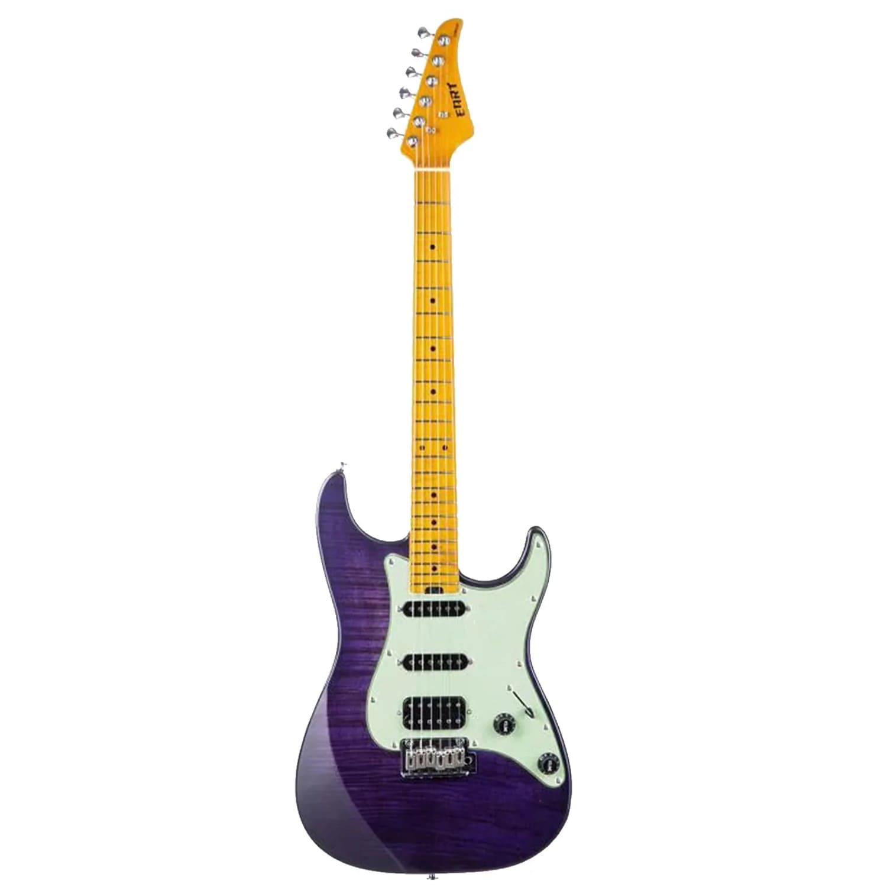

EART NK-C3 Trans Purple
Цена: 48 000 р.
Электрогитара, цвет фиолетовый, корпус - печеный махагони, топ - фигурный клен, гриф - печеный клен, накладка грифа - печеный клен, порожек - кость, профиль грифа - переменный U-C, лады - 22 Medium Jumbo (сталь), мензура 25.5", звукосниматели HSS - Eart Custom (Made in Korea), регуляторы - 1 громкость, 2 тон, 5-ти позиционный переключатель, бридж - 2-Point Tremolo (Made in Korea), колки - литые (1:18), фурнитура - хром